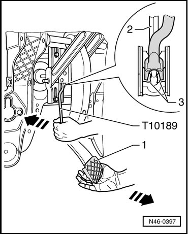

Brake Pedal and Booster Separating
Brake Pedal and Booster Separating
Special tools, testers and auxiliary items required
• Release tool (T10189)
- Remove driver side trim.
- Remove brake light switch/brake pedal switch. Refer to --> [ Brake Light Switch and Brake Pedal Switch ] Service and Repair.
- Attach release tool (T10189) at pressure rod mount in brake pedal and at mounting bracket.

1 Brake pedal
2 Pressure rod
3 Retaining lugs
- Press brake pedal slightly toward brake booster and secure.
- Press release tool (T10189) in direction of brake booster, counter hold at brake pedal (pedal must not move rearward at this point). The mounting retaining lugs - 3 - will thereby be pressed off the ball head of the push rod - 2 -.
- Press release tool (T10189) farther in direction of brake booster and pull brake pedal toward driver seat at the same time. (The brake pedal will thereby be pulled off the ball head of the push rod).
Brake Pedal and Brake Booster, Connecting
- Hold ball head of push rod in front of mounting and push brake pedal in direction of brake booster, so the ball head locates audibly.

Further installation is in the reverse sequence to removal.
- Install brake light switch/brake pedal switch. Refer to --> [ Brake Light Switch and Brake Pedal Switch ] Service and Repair.